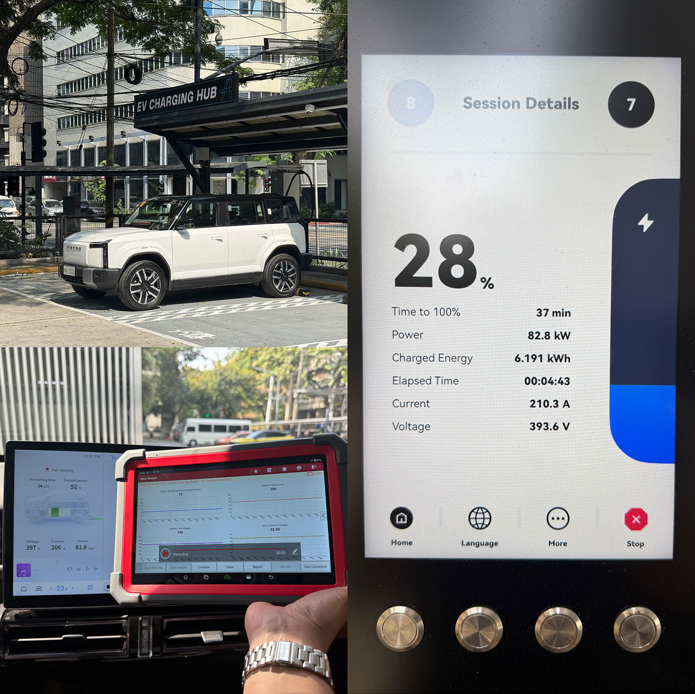

JP Loh / Philippine EV Community
ACMobility Legazpi Carpark·29 Dec 2025, 11:46–12:25·240 kW charger·80 kW claimed max
Well-behaved, and it actually beat its rating slightly. The EJ6 has a flat ~82 kW plateau from 30–50%, taper starting around 55%, down to ~27 kW avg in the 80s. More praise is deserved with hardly a curve observable at 88% flatness, better than plenty of EVs as well as a more predictable C-rating.
The chart's plateau reads as an 82 kW bar from about 25% to 57%, then three clean step-downs: to ~74 kW at 57%, ~67 kW at 68%, and ~44 kW at 75%, before the final taper. Those are discrete BMS steps, not a smooth thermal roll-off, which is the signature of a current-limit table rather than a temperature-driven derate.
Based on this test, it is recommended on long distance motoring to plan charging up to 79% to maximize the charging speed. Any higher SOC and the charging rate is halved when compared to SOC below 57%. Below 55% you get 5% every 2.6 minutes; by 75–80% that's 3.7 minutes; past 80% it roughly doubles.
There is an estimated 2.42 kWh unaccounted between the charger's meter and the logged data. Resistive heating in the cells, thermal management, air conditioning and 12V loads could be attributed to that. A 94.9% charging efficiency is in the normal range.
Outside of the charging curve test, there is a power limit to 70 kW when driving below 15% SOC (the EJ6 has dual motors with a combined 205 kW power rating). There may be no lower speed limit enforced but the limited power draw would be noticed in steep ascents with a full load.
It is unknown if there will be temperature-driven derating when the battery temperature is critical or if a session will simply halt. Another test could back up the current-limit table that's suspected.

Each measure on its own axis, sharing one timeline.
Drag across the chart to zoom into a time range · double-click to reset · hover for values
The comparable view: power drawn at each SOC, independent of how long the session ran.
Hover for values at any state of charge